⚡ Bildmanus — Vikings Never Wore Horned Helmets
Echo & Truth · 41 scener · 6:06 · bilder: nano_banana_pro @ 2k · transkript-synkade klipp, inga captions, ingen crossfade
Klicka på en bild för full storlek.
Scene 10:00 – 0:1212.1s
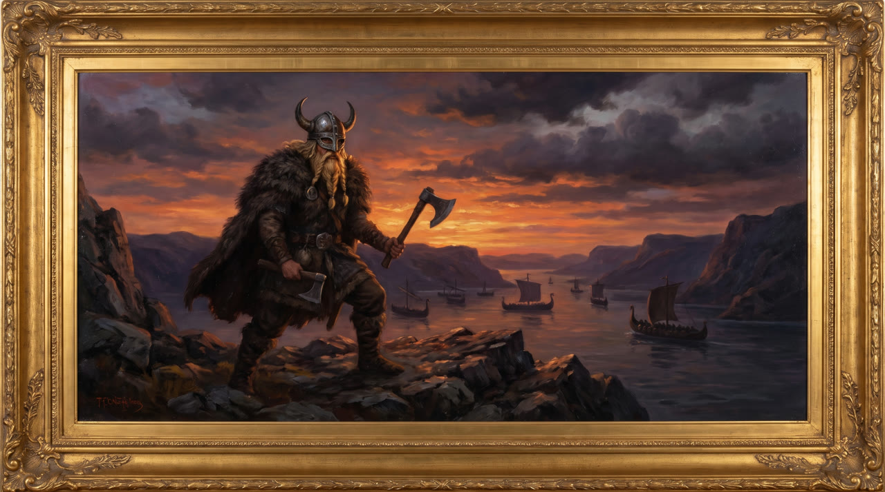
quick, close your eyes and picture a Viking. What do you see? A blonde bearded warrior in a horned helmet, maybe a fur cloak, maybe an axe dripping with blood. There's just one problem
Pop-culture Viking: horned helmet, fur cloak, axe raised (s01.png)
Scene 20:12 – 0:186.7s
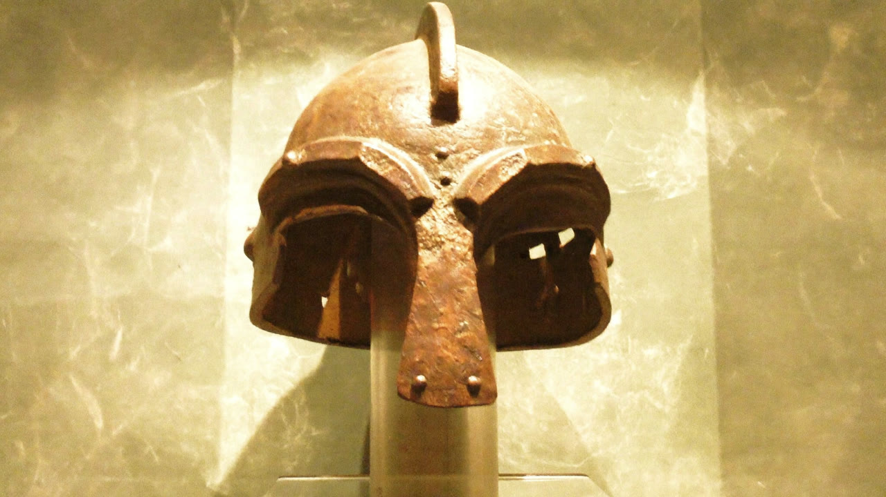
with that image. It never existed. The real Vikings, the Norse sea fairers who raided and traded
Gjermundbu helmet - simple iron cap (s02.png)
Scene 30:18 – 0:3112.6s
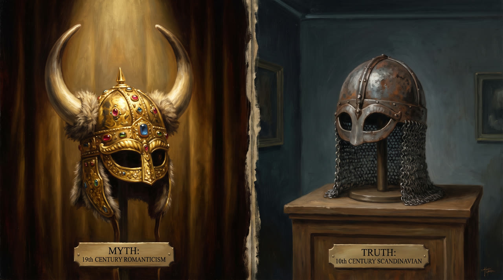
across Europe between the 8th and 11th centuries, never wore horned helmets, not once. This myth is so deeply embedded in our culture that it's almost impossible to escape.
Side-by-side: pop-culture vs real Viking (s03.png)
Scene 40:31 – 0:343.1s
An NFL team built its brand around it.
NFL Minnesota Vikings logo (s04.png)
Scene 50:34 – 0:361.7s
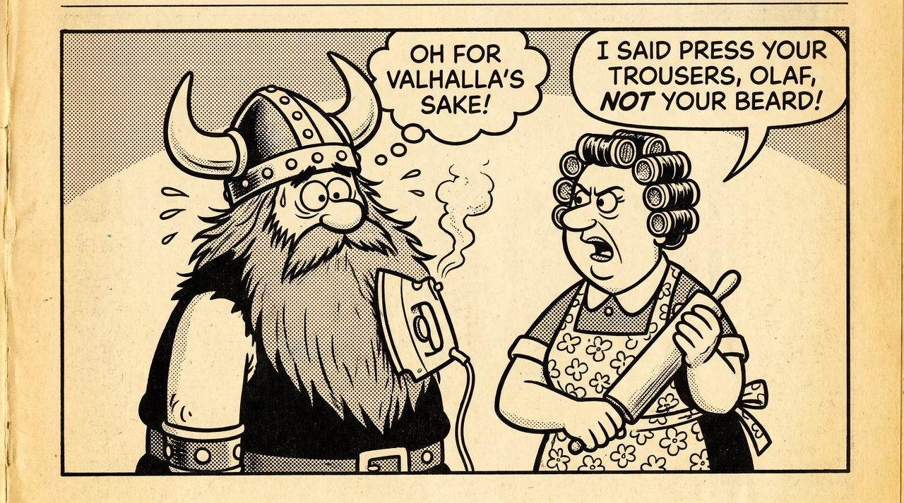
A beloved comic strip, a
Hägar the Horrible comic strip (s05.png)
Scene 60:36 – 0:392.7s
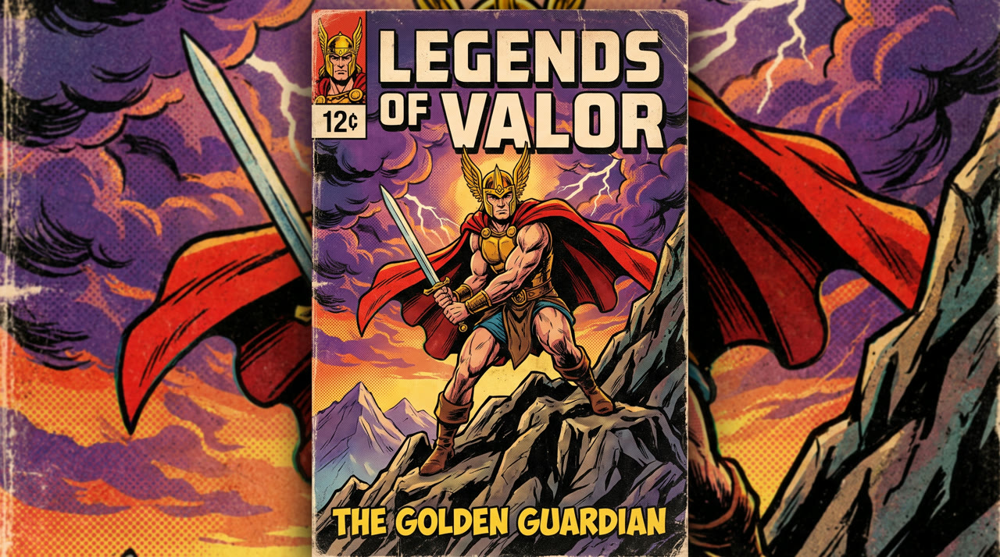
multi -billion dollar movie franchise.
Marvel Thor (s06.png)
Scene 70:39 – 0:467.1s
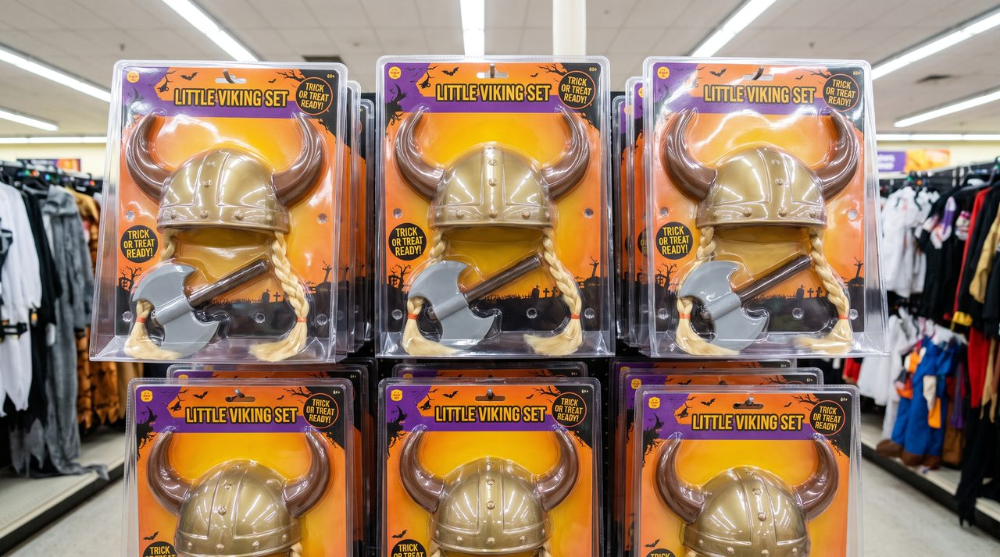
Every Halloween, millions of people put on a plastic horned helmet and call themselves a Viking.
Halloween costume catalog (s07.png)
Scene 80:46 – 0:537.4s
The source of this global misconception can be traced to one man and one opera. In 1876, the German
Bayreuth Festspielhaus 1876 (s08.png)
Scene 90:53 – 1:039.7s
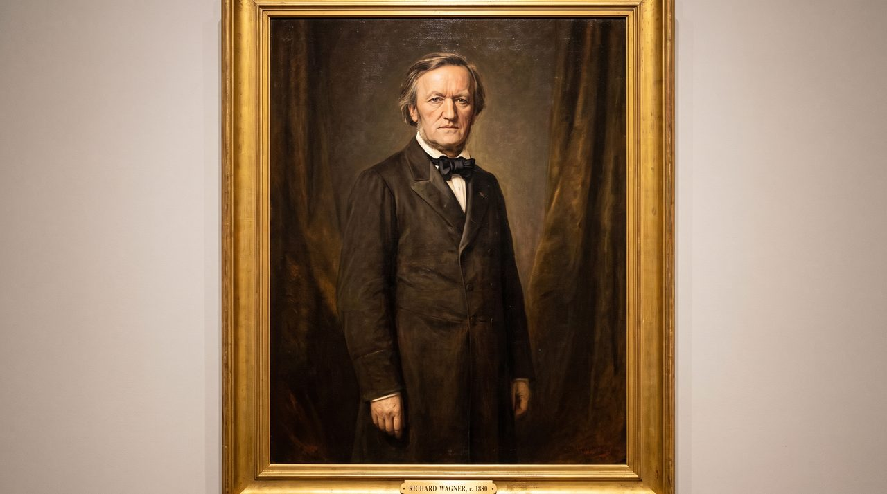
composer Richard Wagner premiered his epic four opera cycle, Der Ring des Nibelungen, at the Biroit Festspielhaus in Bavaria.
Wagner portrait (s09.png)
Scene 101:03 – 1:1310.6s
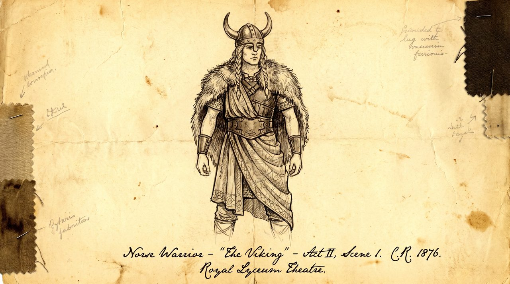
The costume designer was a German painter named Karl Emil Doppler. And his costume sketches included horned helmets for the Norse gods and warriors on stage.
Carl Emil Doepler horned helmet sketch (s10.png)
Scene 111:13 – 1:207.1s
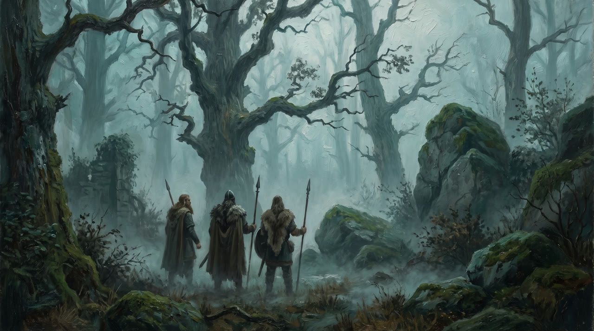
But why horns? To understand that, we have to understand the political climate of 19th century Europe.
Germanic warriors in misty forest (Friedrich) (s11.png)
Scene 121:20 – 1:4020.1s
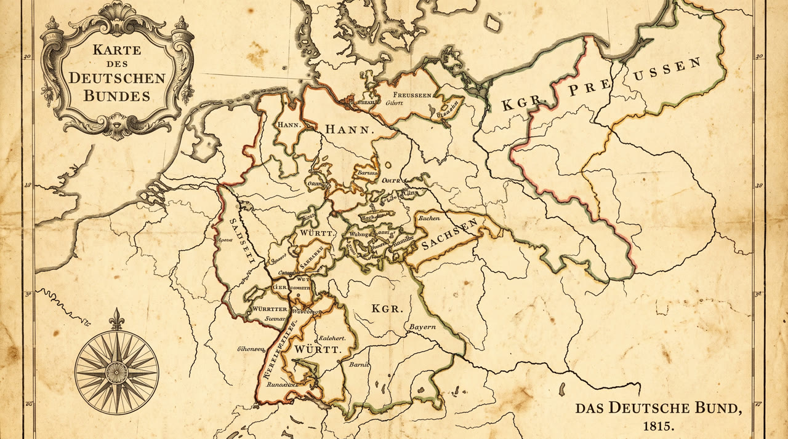
In the 1800s, Germany was a patchwork of states, dreaming of unification. Romantic nationalism was sweeping the continent. Intellectuals were searching for a grand origin story, one free from Greek and Roman influence. And they found it in the Norse sagas. Doppler and his contemporaries deliberately
Map of fragmented Germany pre-1871 (s12.png)
Scene 131:40 – 1:5110.4s
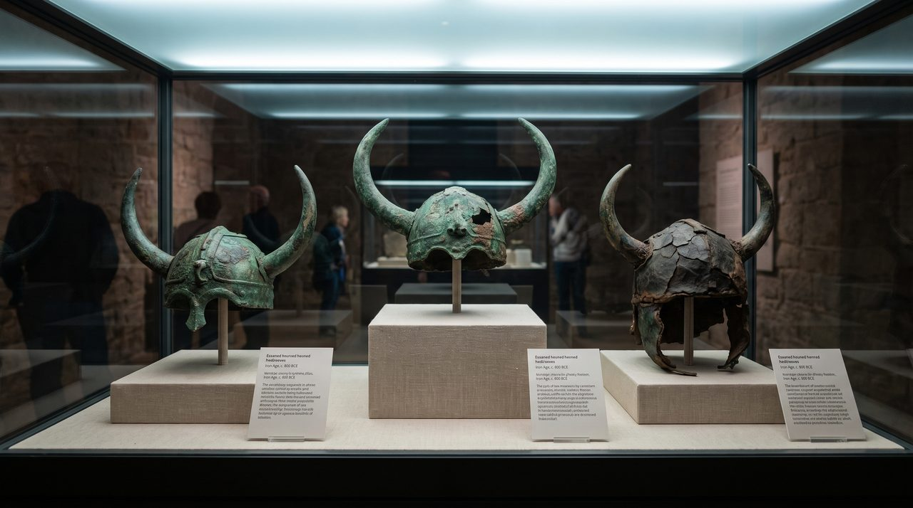
merged Norse and German identity, projecting ancient Germanic headdresses, some of which included horned motifs onto the Viking past.
Ancient Germanic horned headdresses (s13.png)
Scene 141:51 – 1:587.1s
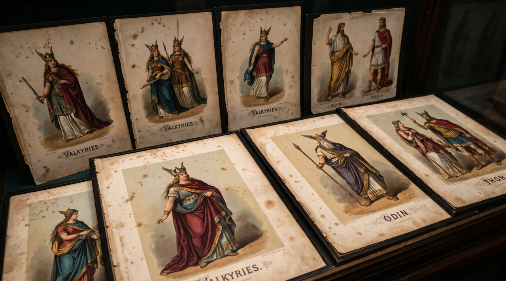
The horned helmet was never a Norse invention. It was a 19th century political statement painted onto history.
Doeple's opera costume designs (s14.png)
Scene 151:58 – 2:0810.0s
As Professor Roberta Frank of Yale wrote in her seminal 2000 paper, the horned Viking and the Viking age were invented together hand in hand. The opera
Roberta Frank portrait (s15.png)
Scene 162:08 – 2:146.5s
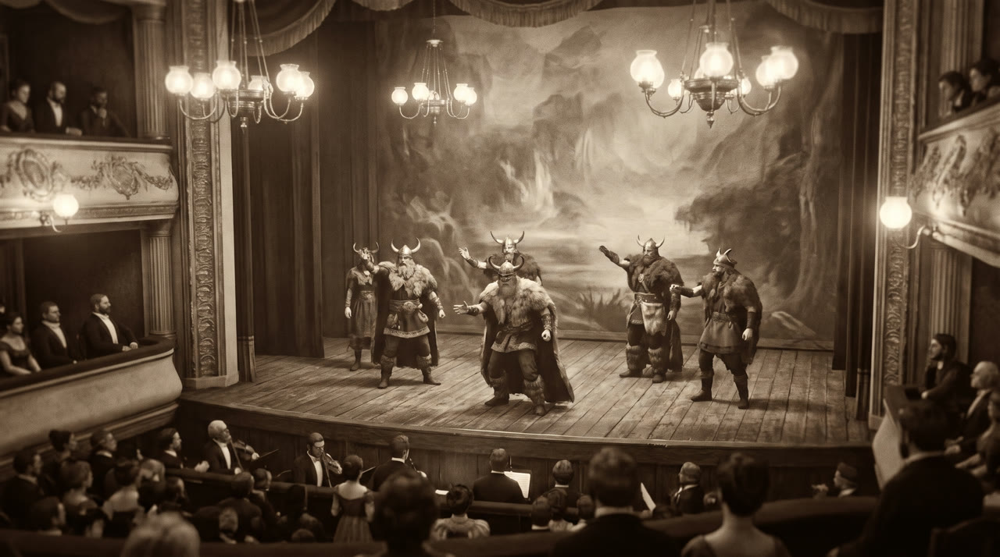
was a sensation. It sold out immediately. It set the visual template for Norse mythology that would
Wagner stage 1876 Ring production (s16.png)
Scene 172:14 – 2:2813.4s
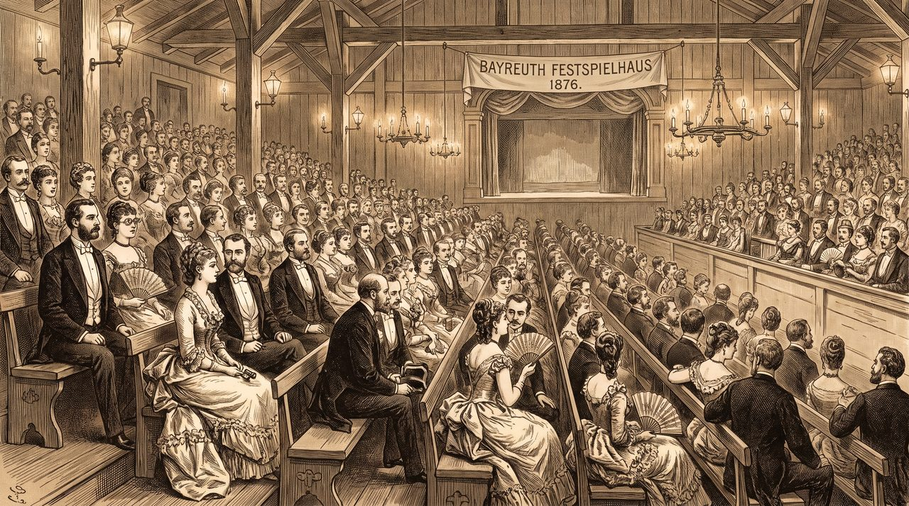
radiate outward across Europe and America. Within decades, illustrators, cartoonists, and film makers were copying Doppler's design without question. A costume choice for one opera cycle became
Audience in opulent 19th-century dress (s17.png)
Scene 182:28 – 2:367.9s
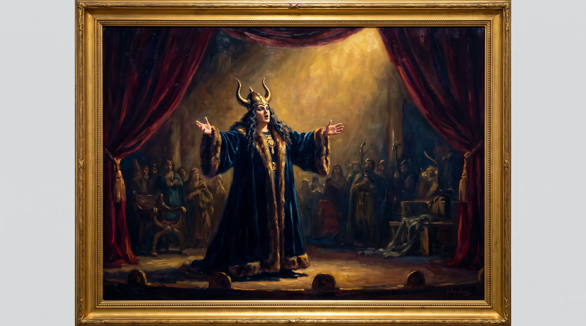
by sheer repetition, a historical fact. Meanwhile, the real Vikings had a very different relationship with helmets.
Horned helmet close-up in performance (s18.png)
Scene 192:36 – 2:415.4s
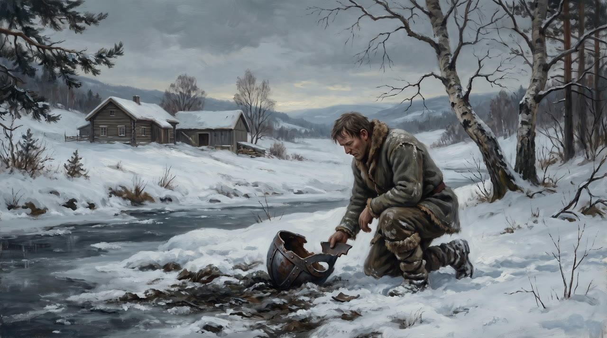
The only nearly complete Viking helmet ever discovered, the Garamon Buu helmet found by a
Gjermundbu farm Norway 1943 snowy (s19.png)
Scene 202:41 – 2:5615.0s
farmer in Buscarud, Norway in 1943, is a simple functional iron cap with a spectacle -shaped eye guard and male curtains for neck protection. No horns, no wings, nothing theatrical. It was made to protect
Excavation photos of the helmet (s20.png)
Scene 212:56 – 3:047.2s
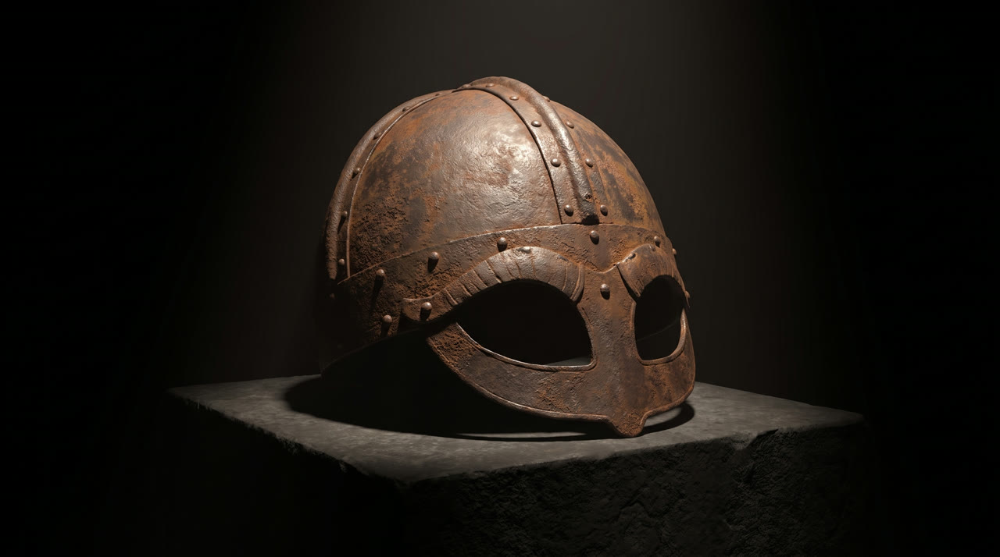
its wearer in actual combat, not to impress an opera audience. In fact, only five Viking helmets or
Reconstructed Gjermundbu helmet (s21.png)
Scene 223:04 – 3:084.3s
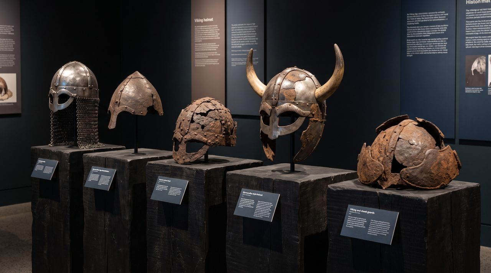
helmet fragments have ever been found across all of Scandinavia.
Five Viking helmets on museum pedestals (s22a.png)
Scene 233:08 – 3:1911.4s
Every single one is a plain practical horn -free design, not because we haven't looked hard enough, but because horned helmets were never part of Viking material culture.
(s22b.png)
Scene 243:19 – 3:3111.9s
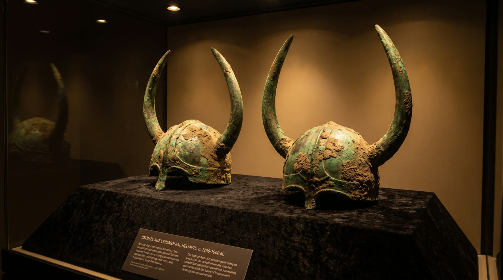
Now horned helmets have been found in Scandinavia, but they predate the Vikings by nearly 3 ,000 years. The Vixo helmets discovered in a Danish bog in 1942,
Bronze Age Viksø helmets emerging from bog (s23a.png)
Scene 253:31 – 3:4716.4s
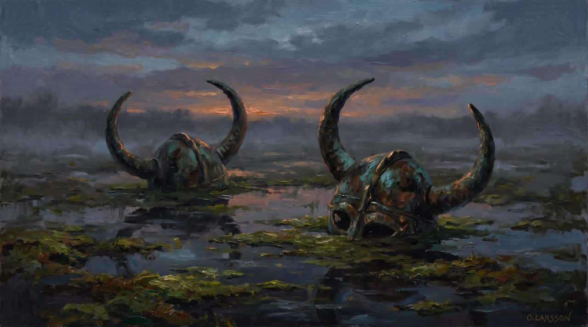
date to around 900 BC, the Bronze Age. They were ceremonial objects, not battle gear, but they vanished centuries before the first Viking longship ever left shore. The horned helmet isn't the only myth we have inherited.
(s23b.png)
Scene 263:47 – 3:535.9s
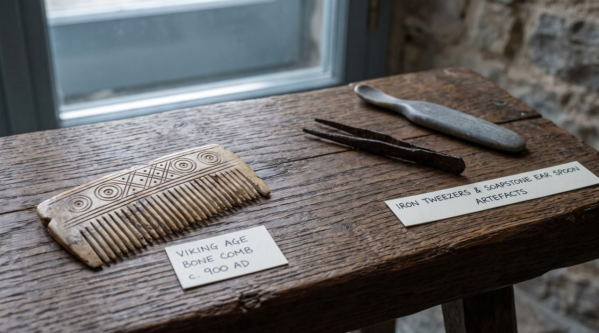
The popular image of Vikings as filthy brutish savages is equally wrong.
Bone comb, tweezers, ear spoons still life (s24a.png)
Scene 273:53 – 4:0713.5s
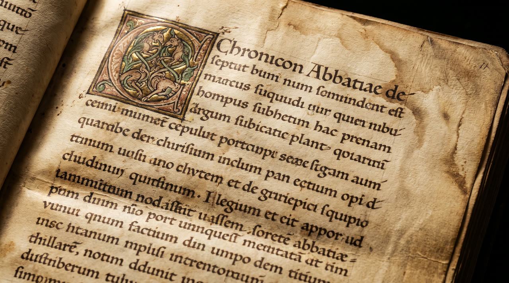
According to the 12th century chronicler John of Wallingford, Danish Vikings combed their hair every day, bathed every Saturday and changed their garments often to the point that Anglo -Saxon men complained
(s24b.png)
Scene 284:07 – 4:1811.1s
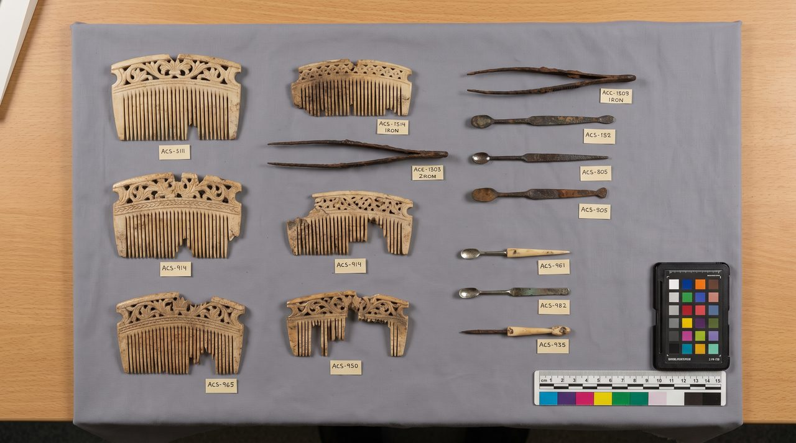
they were losing their women to the better groomed newcomers. Archaeology confirms this, hundreds of combs, tweezers, and ear spoons have been found in Viking settlements.
John of Wallingford manuscript quote (s25.png)
Scene 294:18 – 4:268.0s
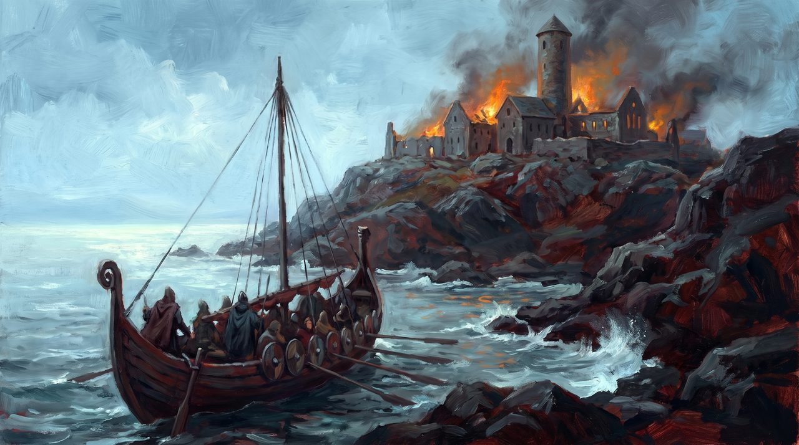
The word Viking itself is also misunderstood. In old Norse Viking are literally means pirate or raider. It was a
Lindisfarne monastery raid (s26.png)
Scene 304:26 – 4:336.8s
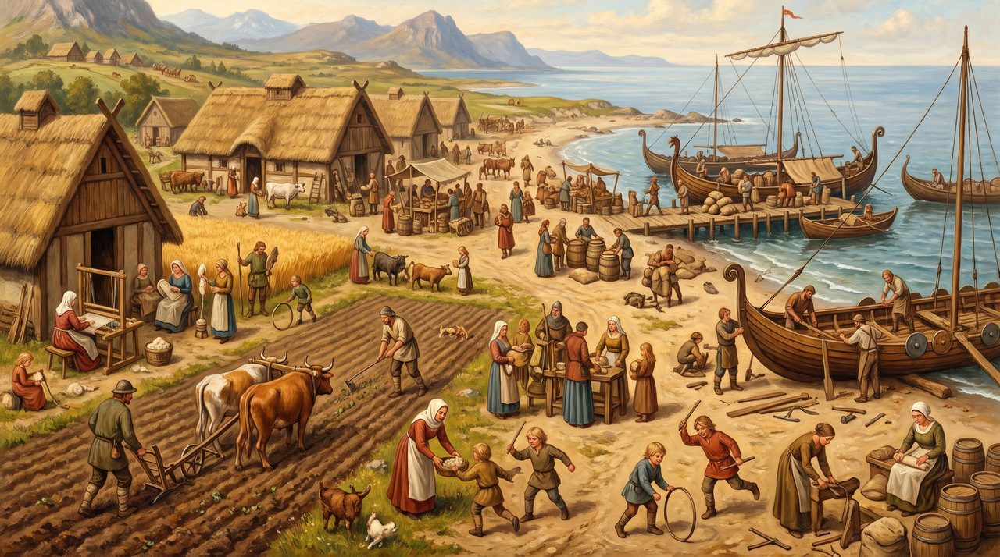
job description, not an ethnicity. The vast majority of Norse people were farmers, traders, craftsmen,
Peaceful Norse settlement daily life (s27.png)
Scene 314:33 – 4:385.4s
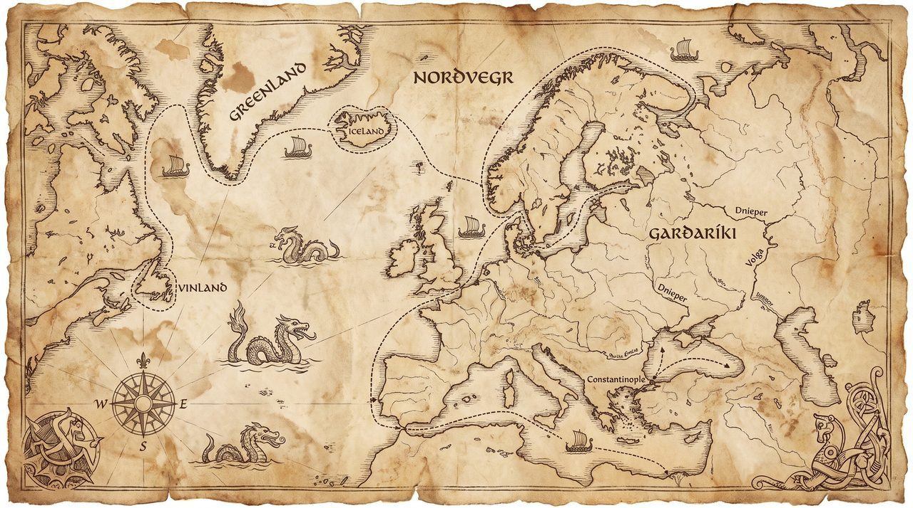
and explorers. They reached as far as Constantinople and North America.
Norse trade routes map (s28.png)
Scene 324:38 – 4:390.9s
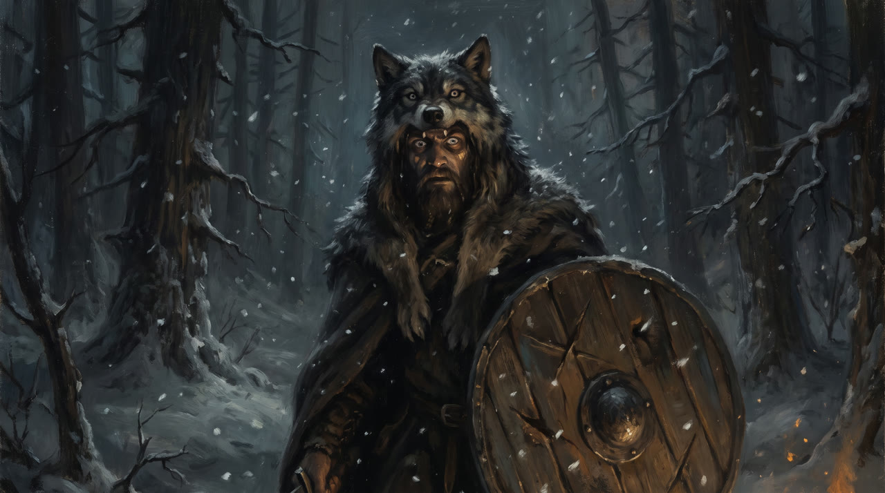
What about the legendary
Berserker warrior wolf-skin cloak snowy forest (s29a.png)
Scene 334:39 – 4:5011.0s
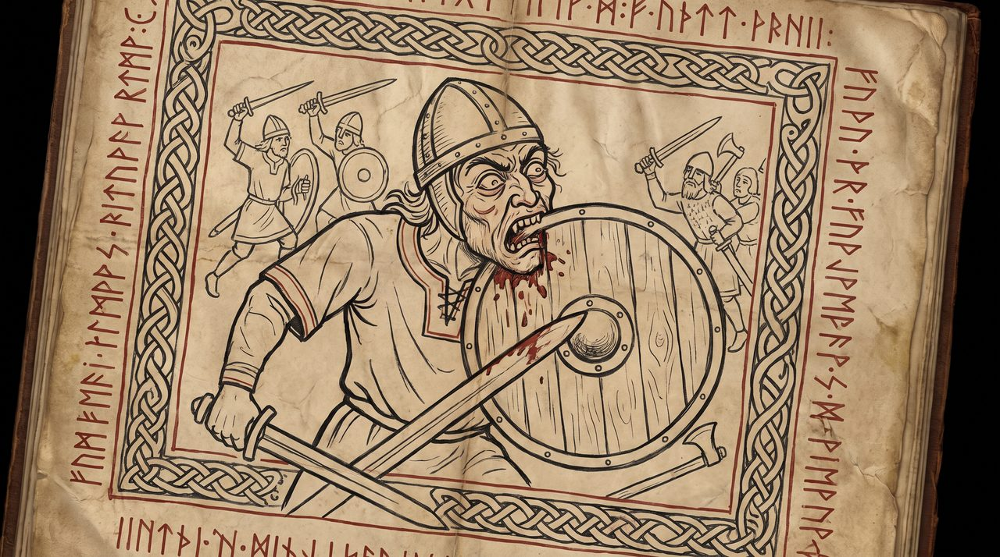
berserkers? The theory that berserkers used hallucinogenic mushrooms remains controversial and unproven, and yet despite a century of debunking,
(s29b.png)
Scene 344:50 – 4:533.3s
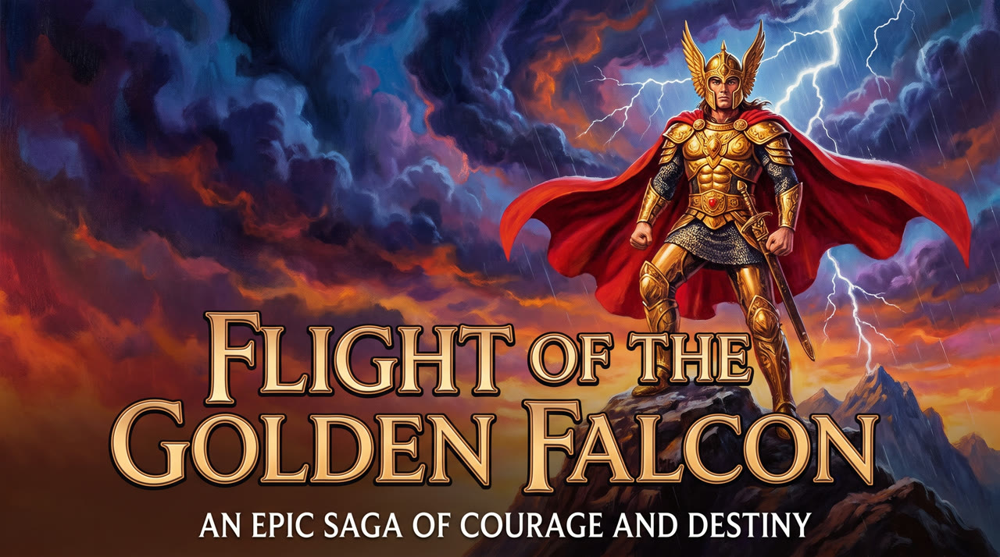
the horned helmet rages on.
Marvel Thor horned helmet (s30.png)
Scene 354:53 – 5:006.6s
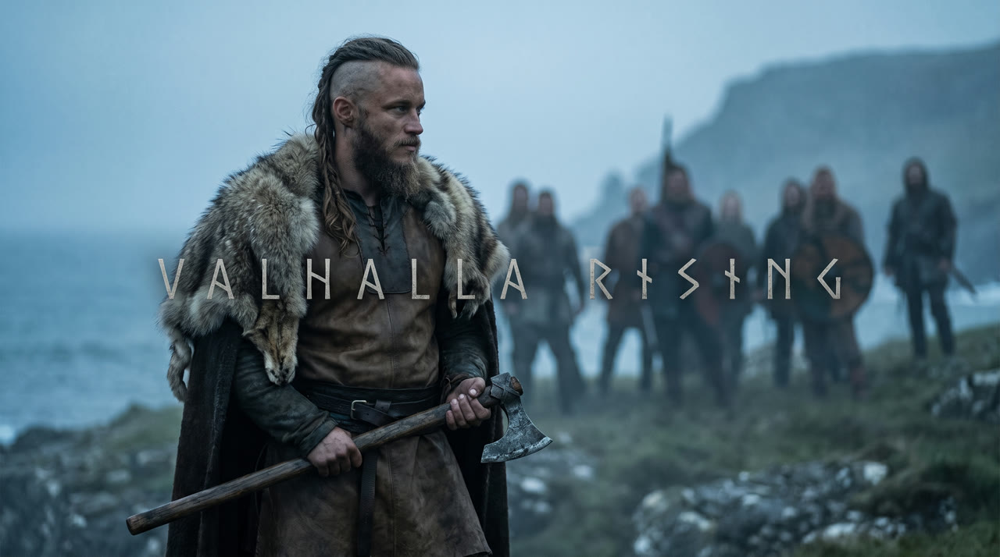
Marvel put one on Thor. The history channels Viking show leaned into horned imagery.
Vikings TV show promo (s31.png)
Scene 365:00 – 5:077.3s
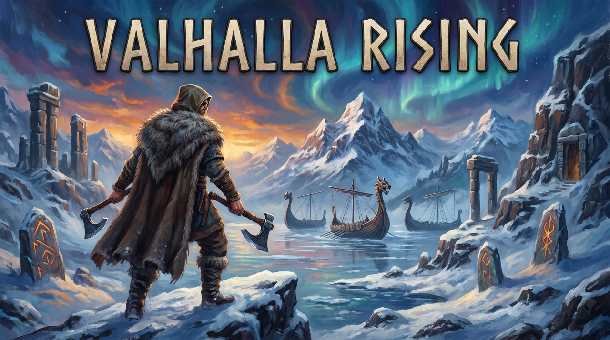
Every video game dances around the visual legacy of a 19th century costume designer. The myth persists
Video games: Assassin's Creed Valhalla (s32.png)
Scene 375:07 – 5:136.2s
because it is simply more interesting than the truth, which brings us to the real question,
Minnesota Vikings stadium crowd (s33.png)
Scene 385:13 – 5:2612.7s
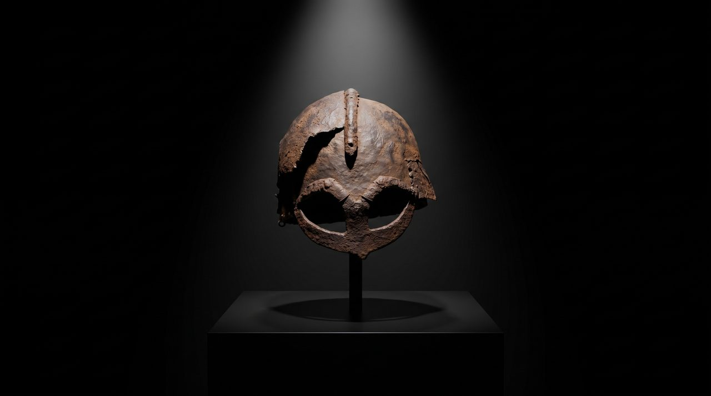
not why the myth exists, but why it matters. It matters because the real Vikings are more interesting than the cartoon. They were explorers who reached North America 500 years before Columbus.
Gjermundbu helmet quiet dignified (s34a.png)
Scene 395:26 – 5:3711.2s
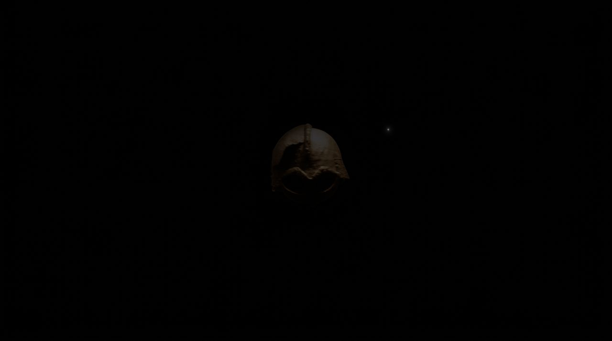
They were traders who connected the Baltic to the Black Sea. They were poets who composed some of the most haunting verses in the medieval world. The horned helmet is a symbol of something else,
(s34b.png)
Scene 405:37 – 5:5921.5s
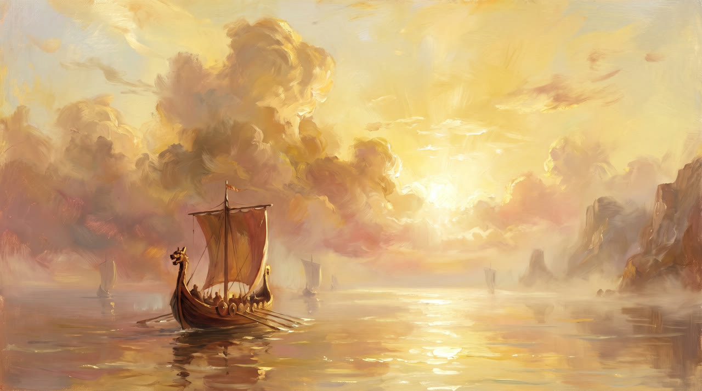
our own desire to reduce the past to caricature. We tell ourselves stories about the barbarians so we can feel civilized. We put horns on the past to distance ourselves from it. But the truth, always quieter, more complex reminds us that every age, including our own, will be misunderstood by the future.
Viking longship sailing horizon (s35.png)
Scene 415:59 – 6:067.0s
The question is, what myths are we creating right now that future generations will have to debunk?
Philosophical faint light on waters (s36.png)